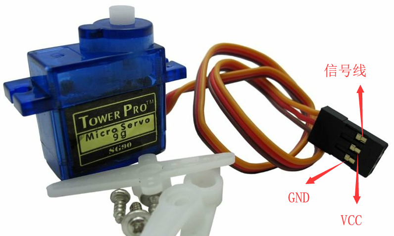
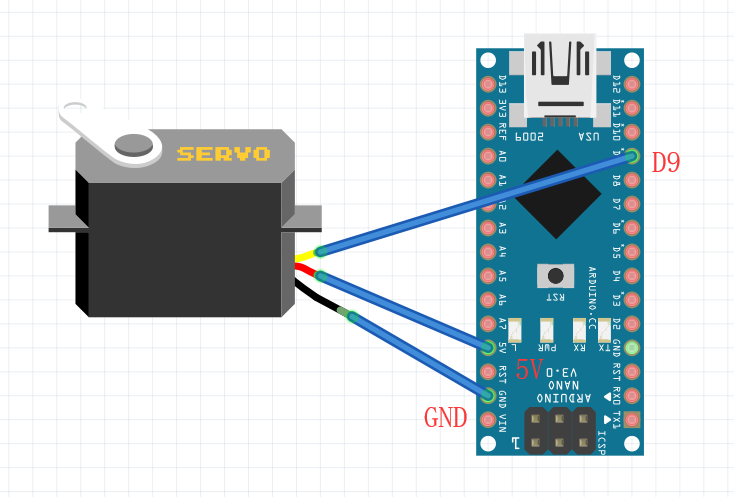

Arduino基础之舵机
写在前面
舵机，一种位置（角度）伺服的驱动器

环境
开发环境：Arduino IDE
舵机：9g 舵机(旋转角度 0°~180°)
开发板：Arduino Nano

使用
#include <Servo.h>
Servo myServo; // 创建Servo对象以控制舵机
int pos = 0; // 角度变量，全局变量
int servo_pin = 9; // 舵机引脚
void setup(){
myServo.attach(servo_pin); // 设定舵机接口
}
void loop(){
// 实现功能：0°~180°往复旋转
for(pos = 0; pos <= 180; ++pos){
myServo.write(pos); // 舵机运动到指定位置
delay(15);
}
for(pos = 180; pos <= 0; --pos){
myServo.write(pos);
delay(15);
}
}接线说明
| 接口 | 颜色说明(一般情况) |
|---|---|
| 5V 引脚 | 红色 |
| GND | 黑色、棕色 |
| 信号线 | 黄色、橙色、白色 |
头文件
#include <Servo.h>
Arduino 自带库
相关函数
| 函数名称 | 作用 |
|---|---|
| attach() | 设定舵机的接口 |
| write() | 设定舵机旋转角度，可设定的角度范围是 0° 到 180° |
| writeMicroseconds() | 设定舵机 PWM，直接用微秒作为参数 |
| read() | 读取舵机角度 |
| attached() | 判断舵机是否已发送到舵机所在接口 |
| detach() | 舵机与接口分离 |
comment:
- Valine
- LiveRe
- ChangYan